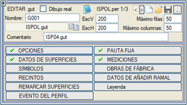
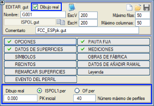

| |
|
ENKESİT PAFTALARI İÇİN ŞABLONLAR
|
.gut dosyaları, enkesitlerin nasıl oluşturulacağına dair bilgileri içerir. Kullanıcı mevcut olanları değiştirebilir veya yenilerini oluşturabilir. Program kütüphanesi dosyalarında, farklı bilgi bantlarına (gitarlara) ait birkaç .gut dosyası bulunmaktadır. Mevcut enkesit bilgi bandı kataloğuna BURAYA tıklayarak ulaşabilirsiniz. Bu dosyalarda açıklanan komutların düzenlenmesi ve değiştirilmesi herhangi bir metin düzenleyiciden yapılabilir, ancak [.gut Düzenle] seçeneğinden erişilen ve yeni şablonlar tasarlamak için bir rehber görevi gören şablon düzenleyiciyi kullanarak interaktif olarak yapılması önerilir. Bir dizi buton, paftalara dahil edilecek verileri işleme türüne göre benzer parametrelerin gruplandırıldığı farklı tematik alanlara erişmeyi sağlar. Enkesit Pafta Şablonu Düzenleyicisinin Genel Özellikleri Butonlardan birine her tıklandığında, kavramsal olarak ilişkili bir dizi seçenek ve öğe sunan bir alt menüye erişilir. Bu menüler, kullanıcının çizim sistemini benzer çalışma alanlarında yapılandırmasına olanak tanır. Tüm bu diyalog kutularında, sistemin kontrolünü bir önceki noktaya geri döndüren bir [Geri] tuşu sunulur. [Yükle]  seçeneği, düzenlemek için mevcut .gut dosyalarını art arda seçmenize olanak tanır ve en son seçilen yüklenmiş kalır. Seçim yapıldıkça, yüklemeden önce her şablonun bir modeli gösterilir. seçeneği, düzenlemek için mevcut .gut dosyalarını art arda seçmenize olanak tanır ve en son seçilen yüklenmiş kalır. Seçim yapıldıkça, yüklemeden önce her şablonun bir modeli gösterilir.Varsayılan olarak oluşturulacak gelecekteki şablon dosyasının adı olarak G001 adının sunulduğunu hatırlamakta fayda var. Bu nedenle, düzenleme yapmadan önce ilgili alana dosyanın adını belirtmek uygun olur.  butonu, yüklenen .gut dosyasının adını çıktı dosyası için ad olarak kopyalar. butonu, yüklenen .gut dosyasının adını çıktı dosyası için ad olarak kopyalar.Kullanıcının tercihine göre bir yorum eklemek için bir alan vardır. Herhangi bir yorum eklenmezse, varsayılan olarak dosya adını koyacaktır. Bu şekilde, geçici ISPOL.gut dosyasında ya bizim yazdığımız yorumu ya da oluşturulduğu dosyanın adını görebiliriz. .gut dosyası, [Kaydet]  butonuna basıldıktan sonra oluşturulacak ve birincil olarak ayarlanmış kütüphanede saklanacaktır. Eğer kaydedilen şablon, çizim için kullanılanla aynı ise, otomatik olarak yeniden yüklenir. butonuna basıldıktan sonra oluşturulacak ve birincil olarak ayarlanmış kütüphanede saklanacaktır. Eğer kaydedilen şablon, çizim için kullanılanla aynı ise, otomatik olarak yeniden yüklenir.Düzenlenmekte olan dosyayı ikinci veya üçüncü kütüphaneye simgesi aracılığıyla kaydetmek mümkündür. Bu menüye girildiğinde, o anda kullanımda olan dosyalar, yani en son kullanılmış olan, otomatik olarak ISPOL.gut olarak yakalanır. Düzenleyiciler içinde, bir dosya yüklendiğinde veya veriler değiştirildiğinde ISPOL.gut dosyası değiştirilir, böylece çıkışta, kaydetmeye gerek kalmadan, enkesitlerin çizimi için veya düzenleyicilere tekrar girmek için kullanılabilir hale gelir. Not defteri simgesinden  seçtiğimiz .gut dosyasını (Notepad) düzenleyebiliriz. seçtiğimiz .gut dosyasını (Notepad) düzenleyebiliriz.Çarpı simgesinden o anda yüklenmiş olan verileri sıfırlayabiliriz. Alt menülerin solunda görünen farklı onay işaretleri, ilgili alt menünün bilgi bandımız (gitar) için önemli bilgiler içerdiğini gösterir. Enkesitlerin çizimi için bilgi bandının düzenlenmesi, mevcut güzergahın bir kesiminin gerçek çizimi üzerinde yapılabilir. Bunun için Gerçek çizim kutucuğunu etkinleştirmemiz gerekir. Bu durumda, başlangıç kilometresi ve paftaya sığacak maksimum enkesit sayısı seçilebilir. Bir sayfanın tüm elemanları oluşturulur ve üzerlerinde durarak özellikleri sorgulanabilir. Varsayılan olarak ISPOLn.per dosyasında kayıtlı enkesiti gösterecektir, ancak sanat yapılarımız varsa, OF.per enkesitini de gösterebiliriz. 
Ölçek ve satır ile sütun sayısının belirtilmesi Her diyalog kutusunun üst kısmında, ekranda düzenlenecek enkesitlerin dikey (DüşeyÖlçek) ve yatay (YatayÖlçek) ölçekleri belirtilir. Yatay ve dikey ölçeği farklı olan enkesitler çizildiğinde, şeritlerin, traverslerin ve diğer ölçeklenebilir sembollerin sembolleri bu ölçeklere ve uygulandıkları açıya göre deforme olur. Bu düzenleme satırlar ve sütunlar halinde olacak ve her durum için izin verilen maksimum değere göre koşullandırılacaktır. Varsayılan olarak, yüksek bir değer (50) verilir, bu da seçilen formata sığacak maksimuma kadar düzenleneceği anlamına gelir. |